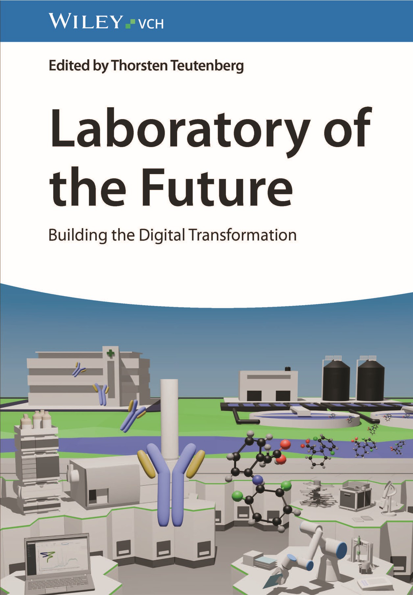
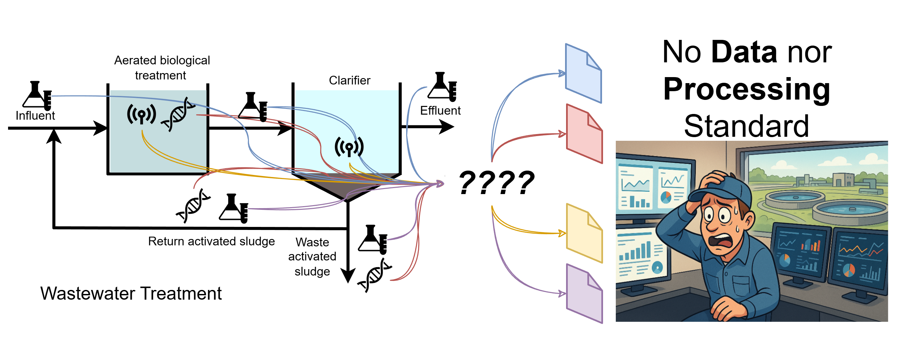
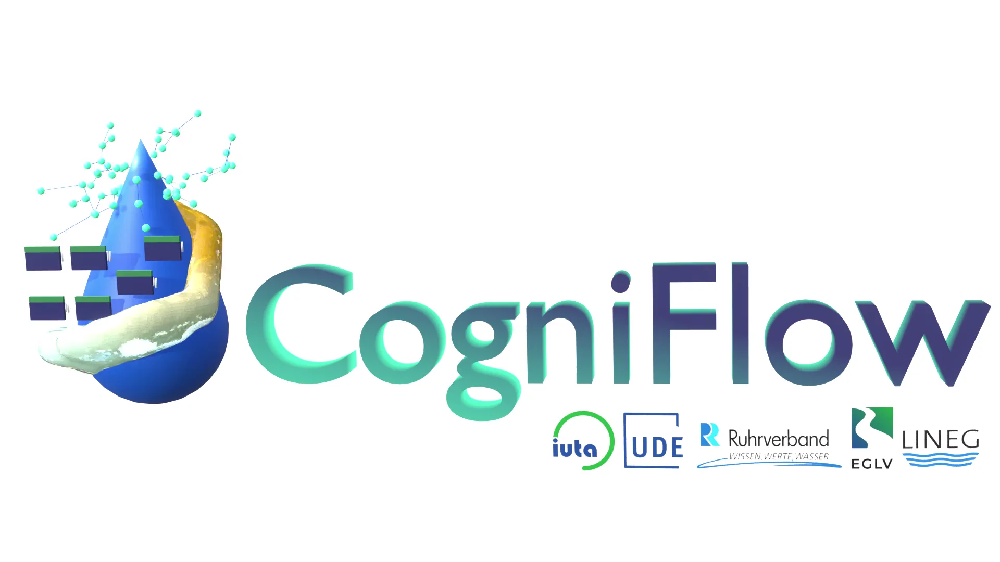
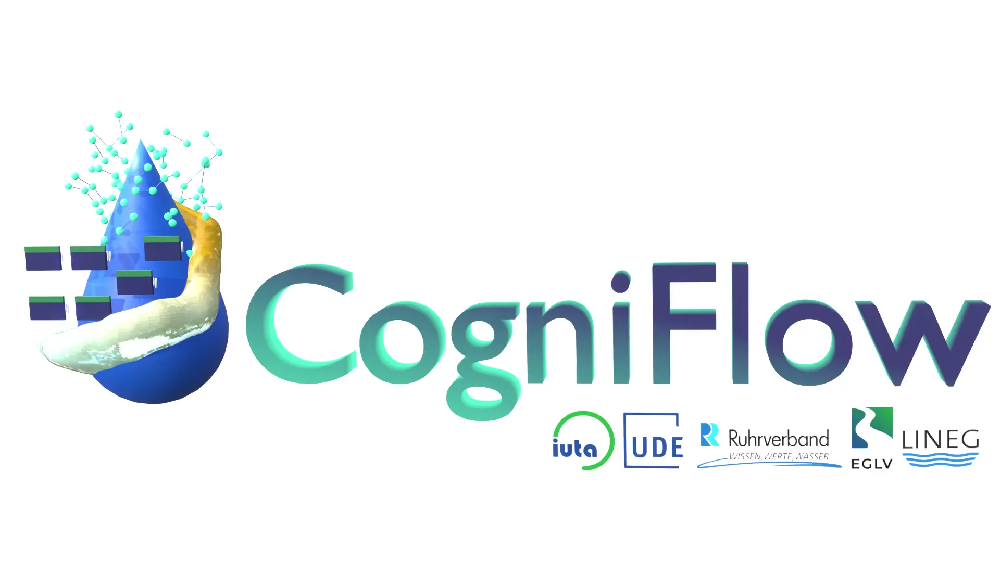
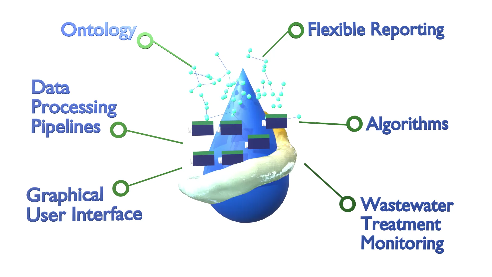
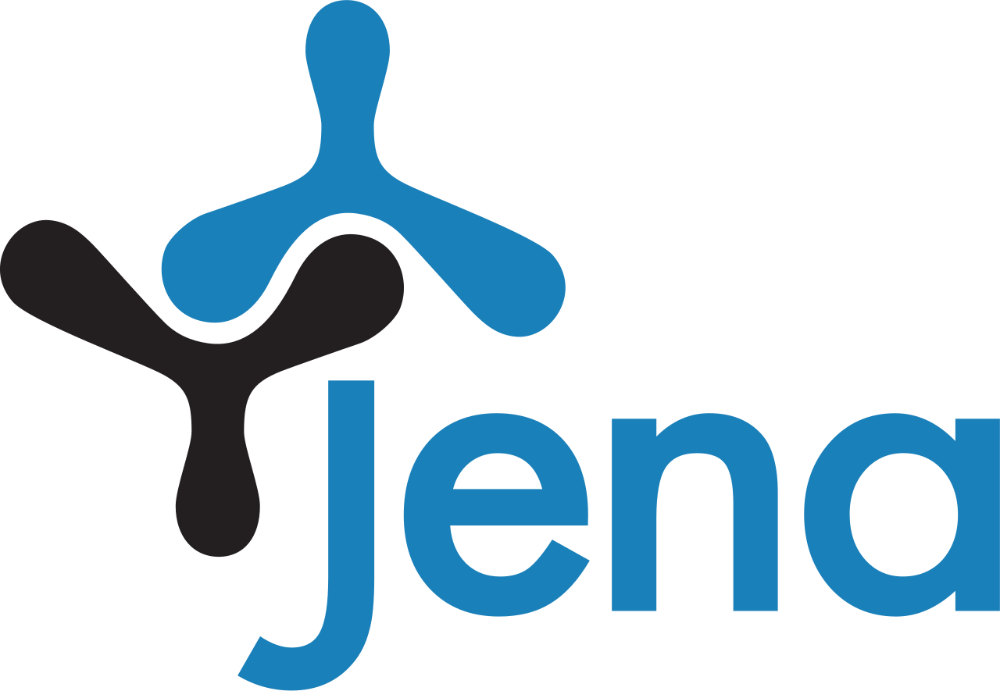
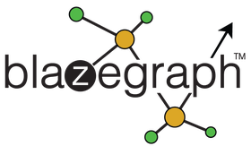

CogniFlow
Ontology-driven standardization
for FAIR data processing
Ricardo Cunha
Institut für Umwelt & Energie, Technik & Analytik e. V. (IUTA)
cunha@iuta.de
Gerrit Renner
University of Duisburg-Essen, Instrumental Analytical Chemistry, TC Schmidt Lab
gerrit.renner@uni-due.de
https://elearning.odea-project.org/cogniflow_workshop.html
Institut für Umwelt & Energie, Technik & Analytik e. V. (IUTA)
cunha@iuta.de
Gerrit Renner
University of Duisburg-Essen, Instrumental Analytical Chemistry, TC Schmidt Lab
gerrit.renner@uni-due.de
https://elearning.odea-project.org/cogniflow_workshop.html
Laboratory of the Future by Thorsten Teutenberg
Provides essential information and guidance on the practical implementation of digitisation and automation topics at all stages of the laboratory value chain.
ISBN: 978-3-527-35265-4





Associated Partners
Software stack possibilities
Framework

Python
Java

R

Ruby
Go
Algorithms

C++
Rust

C#
Python
Julia
Semantics

Apache Jena
RDFLib

Blazegraph
RDF4J
Graphical User Interface

Streamlit
Shiny

JavaScript
TypeScript
React
Qt
Unreal Engine
Selected Implementation Stack
Framework
Python
Algorithms
C++
Semantics
Apache Jena
Graphical User Interface
JavaScript
TypeScript
React
Slide title
- Bullet point 1
- Bullet point 2
- Bullet point 3

Slide title
- Bullet point 1
- Bullet point 2
- Bullet point 3
Ontology

- Semantic core of Cogniflow
- Defines the shared language for concept domains
- Minimal by design: no domain-specific logic
Distributed as the Python package
cf_ontology
via PyPI
Ontology
core
concept layer